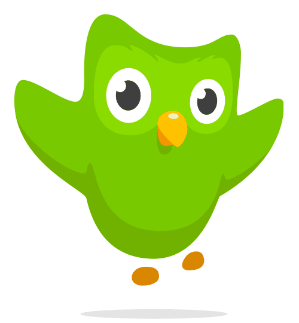
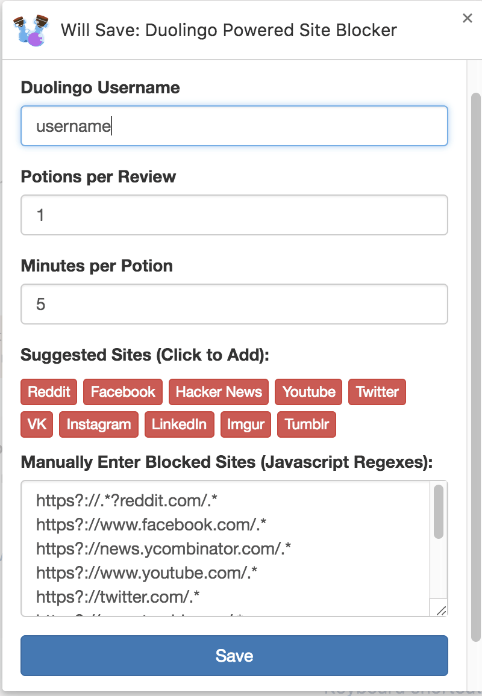
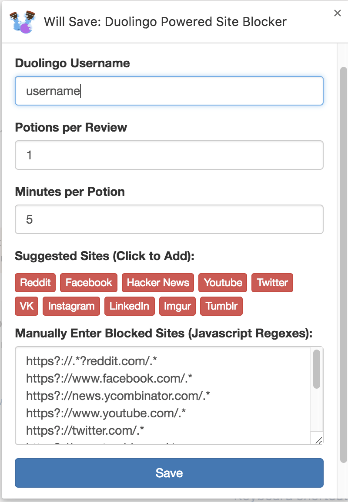

Chrome
As you might have noticed, time seems to pass by quicker on time-wasting sites like Reddit, Twitter, Facebook, Imgur... you know the sorts.
Hours pass by like minutes.. And sometimes you don't even remember how you got there!
Drink this potion before entering one of these sites, and you'll stay safe.
Need another potion? Hop over to Duolingo to do a review. You'll brew one potion per 10 EXP on Duolingo.
Will Save is a browser extension for Firefox and Chrome. Once installed, link your Duolingo account to receive potions for each lesson you complete. Trade in potions to spend time on time-wasting sites you've added to your blocklist.
Looking for another browser? Request it on Github.
 

Not at all. You simply tell the extension what your duolingo username is, and it will pull your exp info from the public API.
In the extension settings (Chrome: chrome://extensions > Will-Save > Settings, Firefox: Tools > Addons) you can customize these two settings. By default you get 1 potion per 10XP and 10 minutes per potion.
Yes! Because the extension looks at Duolingo's API, anytime you're credited with EXP you will be able to use it.
Nope. No ads either. The amount of time it's saved me is well worth my effort.